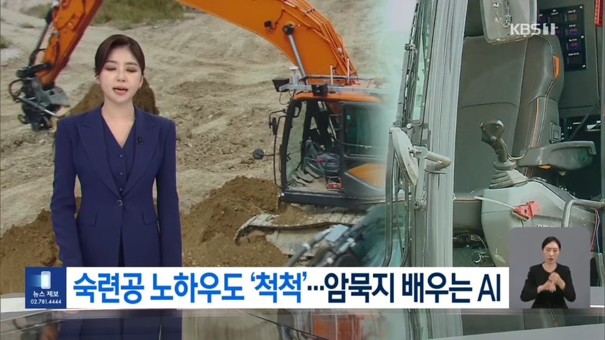
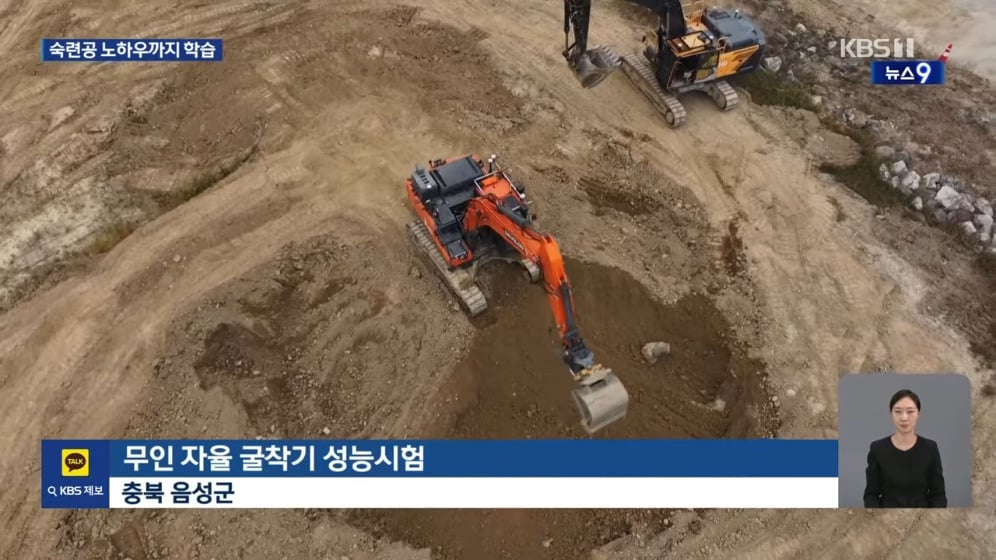
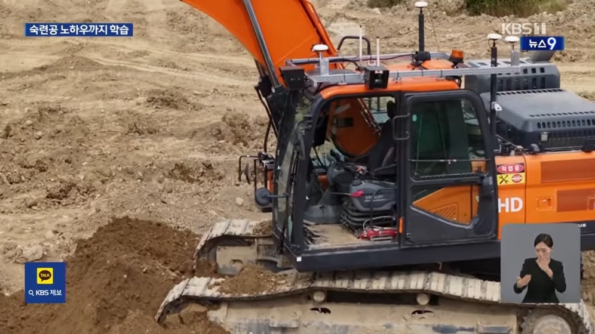
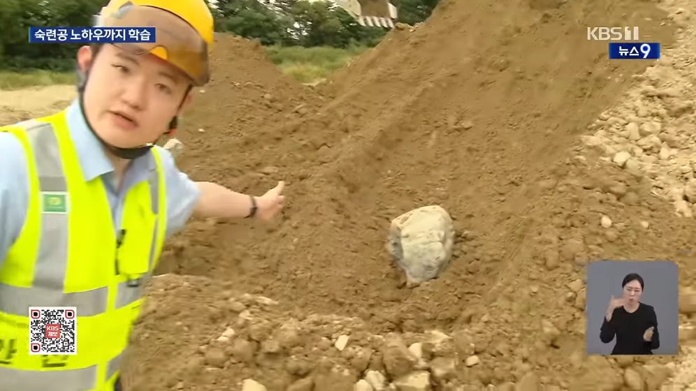
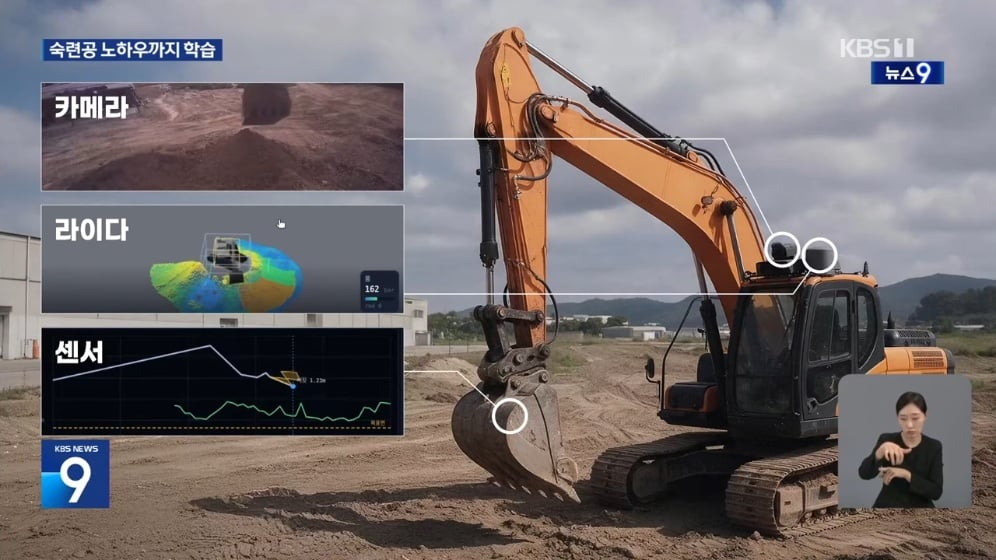
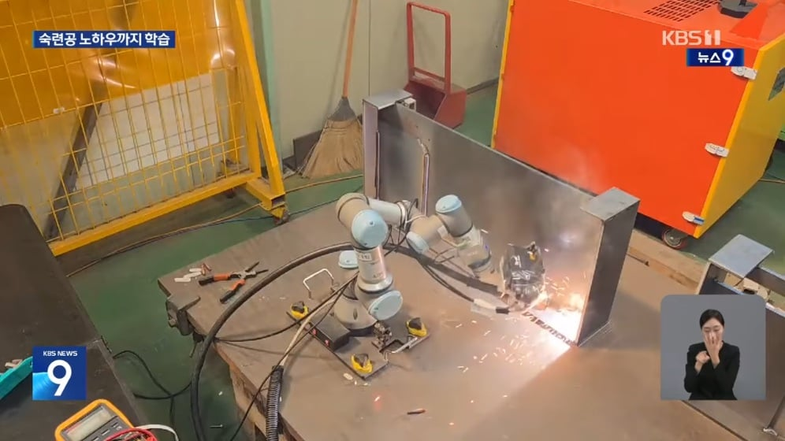
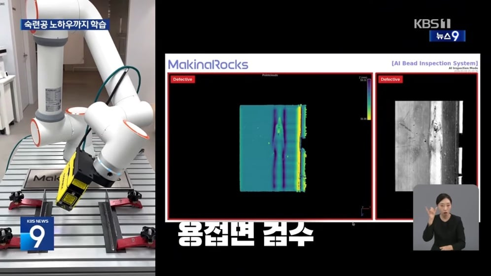
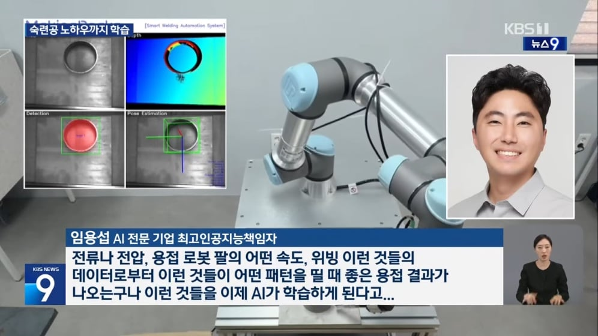
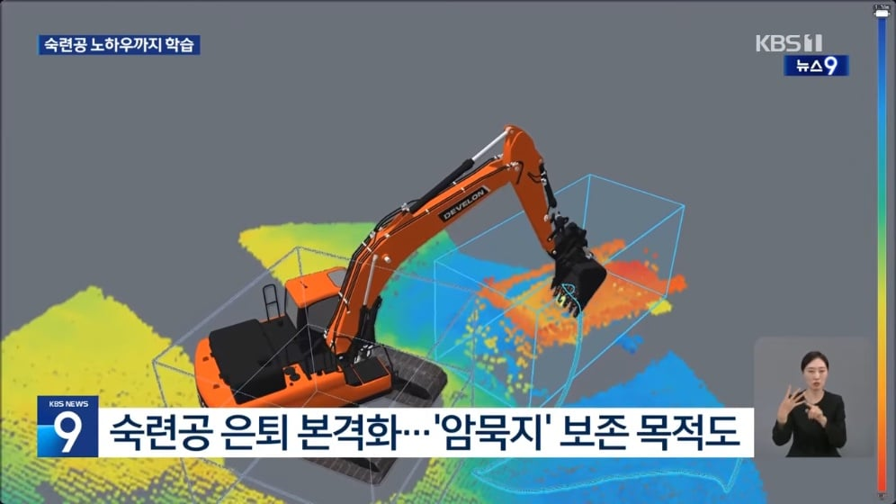
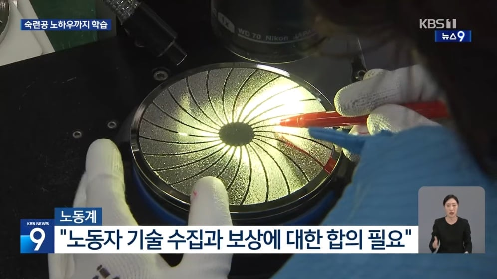

산업현장에서 숙련공들의 섬세한 기술은 말로 설명하기 어려운 것들이 많죠.
이른바 '암묵지'인데요.
인공지능이 이런 기술까지 배워 부족한 숙련공들의 자리를 채우고 있습니다.
신형 굴착기 성능 시험이 한창입니다.
흙더미가 흘러내리려 하자 삽을 약간 흔들어 막습니다.
숙련된 굴착기사 같지만 운전석은 텅 비어 있습니다.

굴착기를 조종한건 인공지능입니다.
이번엔 굴착기가 멈칫하더니 조심스럽게 흙을 긁어냅니다.

파낸 자리를 확인해 보니 이렇게 커다란 돌이 박혀 있습니다.
인공지능이 장비에 가해진 저항을 감지하고 숙련공처럼 힘 조절에 들어간 겁니다.

이런 미세 자율 조종이 가능한 건 인공지능이 굴착기 숙련공의 몸에 밴 기술, 이른바 '암묵지'를 배웠기 때문입니다.
시선은 카메라, 지형은 라이다, 삽을 푸는 강도는 각종 센서로 기록해, 숙련공이 '이런 상황에선 이렇게 했다'는 판단 자체를 AI에 학습시켰습니다.

세심한 손기술이 필요한 산업 용접에서도 암묵지 인공지능의 활약이 두드러집니다.
작업 경로를 보정하고, 균열이나 기공 같은 결함도 척척 가려냅니다.


2차 베이비붐 세대인 숙련공들의 은퇴가 본격화하면서 정부는 암묵지를 핵심 산업 자산으로 보고 인공지능과의 결합을 서두르고 있습니다.

다만 노동계에선 노동자들이 평생 쌓은 노하우의 수집과 보상에 대한 사회적 합의가 먼저라는 지적도 나옵니다.

AI와 로봇기술은 숙련공도 대체하는 방향으로 나아가고 있음
나중에는 인간이 하는 일은 문제생겼을 때 책임지고 자살하기일 거 같다